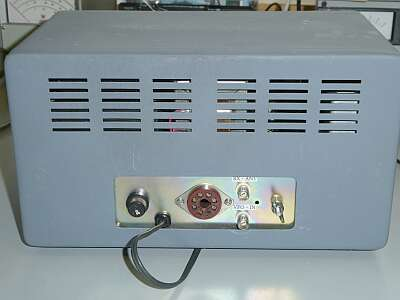
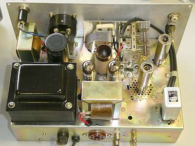
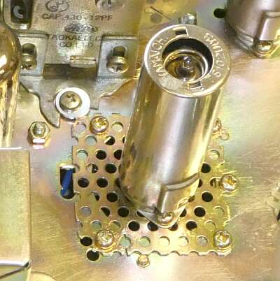
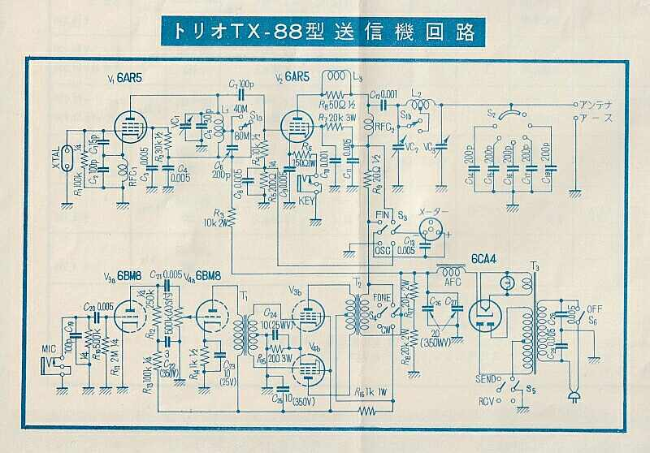
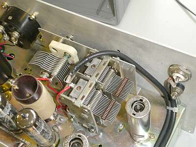
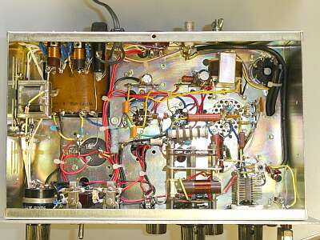

 |
リアパネル
２つのＢＮＣ-Ｒは
１．受信機に接続するアンテナ端子
２．ＶＦＯ接続端子
ＧＴソケットには、受信機のスタンバイ配線も出ています |
  |
シャーシ上部
シャーシは再メッキしてあります
ＲＦ系の球には、オリジナルには無いシールドケースが採用されています
整流管 ６ＣＡ４（黒のブロックコンデンサの位置にあった）は、ダイオードに置き換えられています
元々ブロックコンデンサの取り付いていた位置には、リレーが取り付けられています（右下のシールドされて見える） |
 |
終段の６ＡＲ５は、対流（放熱）をよくするためにでしょう、パンチングメタルが採用されています
６ＢＭ８プッシュプルの変調器は、６ＡＲ５シングルには大きすぎるようにも思えます
２Ｅ２６など、高出力のものに交換して使うことも、想定にあったのかもしれません |
 |
 |
シャーシ上部、フロントパネル裏です
ＶＣの取り付けには、サブパネルが用意されていますが、ひとつ横に移動させてあります
メータの位置は、元々２００ＰＦロードＶＣの位置
元々２００ＰＦの固定コンデンサを切替るロータリーＳＷの位置なのですが、４３０ＰＦ２連のＶＣを取り付けて使用することで、このローターリーＳＷを省略してあります
ＶＣ２００ＰＦ＋必要な容量をＳＷで切り替えて追加というスタイルを４３０ＰＦ２連ＶＣに置き換え、ツマミをひとつ省略、空いたスペースにメーターを取り付けたという形です |
 |
シャーシ底側
オリジナルにはなかった、ＡＣラインフィルタが用意されています（電源トランスの上に見えます）
|